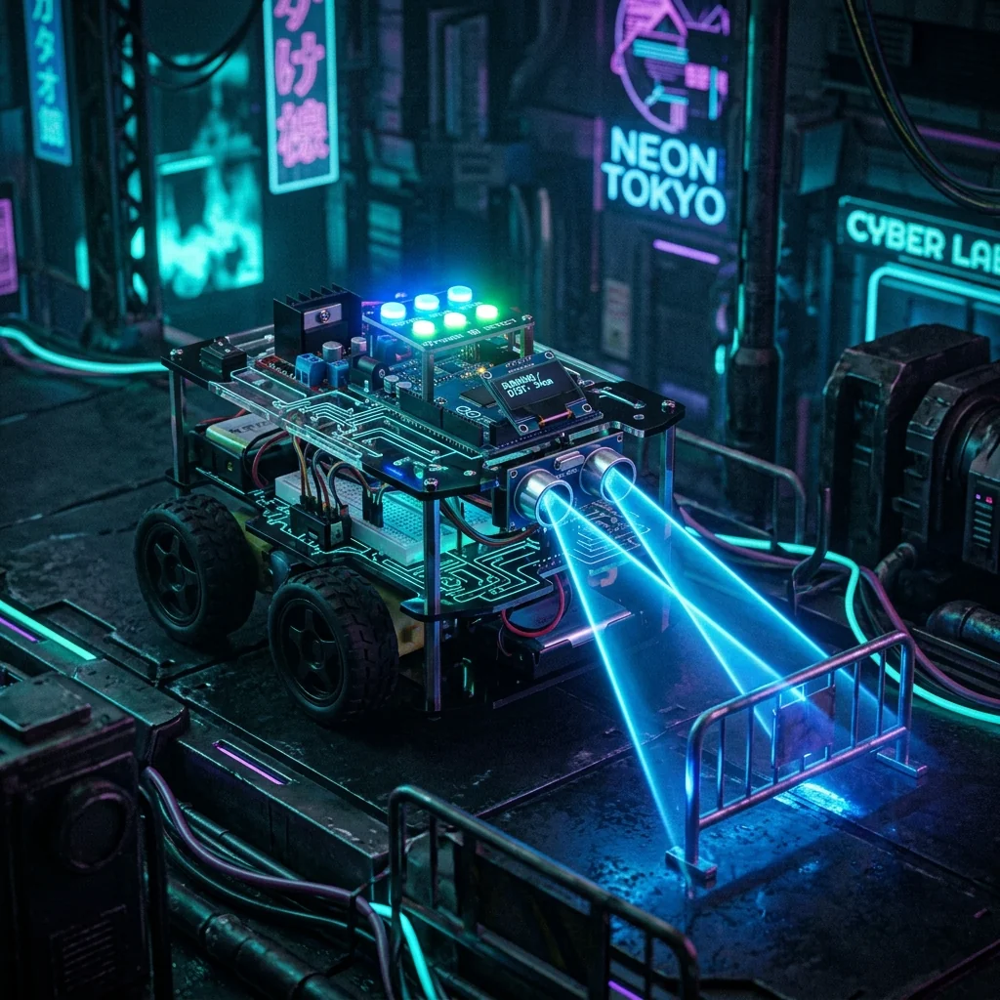

Obstacle Avoiding Robot

Project Overview
The Obstacle Avoiding Robot is a fully autonomous four-wheeled robot capable of navigating environments without any human input. Powered by an Arduino UNO and equipped with three HC-SR04 ultrasonic sensors — front, left, and right — the robot detects obstacles within a 30 cm threshold and makes real-time steering decisions to avoid collisions. The L298N dual motor driver handles independent wheel speed control for smooth turns.
Key Features & Implementation
- Three-Axis Sensing: Simultaneous front, left, and right ultrasonic readings are polled every 50ms, giving the robot a 180° obstacle awareness field to choose the clearest path intelligently.
- Decision Algorithm: A simple priority-based algorithm compares all three distance readings — if the front is blocked, it selects the side with greater clearance and executes a timed pivot turn before resuming forward travel.
- PWM Speed Ramping: The L298N is driven with PWM signals, allowing the robot to slow down when approaching obstacles rather than performing abrupt stops, giving it a more natural and robust navigation feel.
Challenges Solved
Ultrasonic sensors occasionally returned spurious zero readings due to narrow-angle reflections on smooth surfaces. A median-of-three reading filter was implemented per sensor cycle, discarding outlier values before any decision is made — drastically improving navigation reliability on tiled floors and glass surfaces.